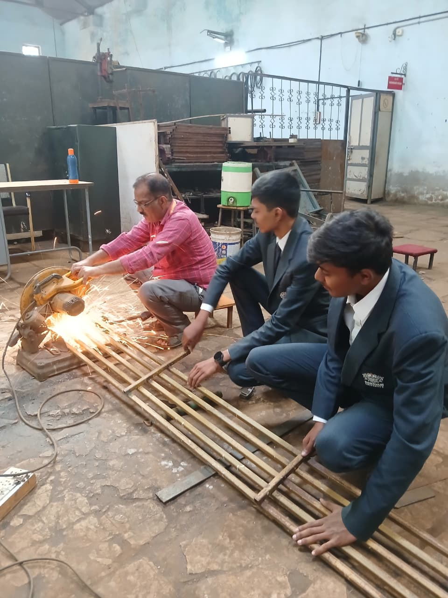
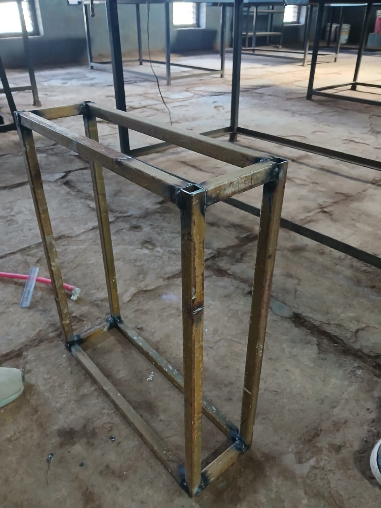
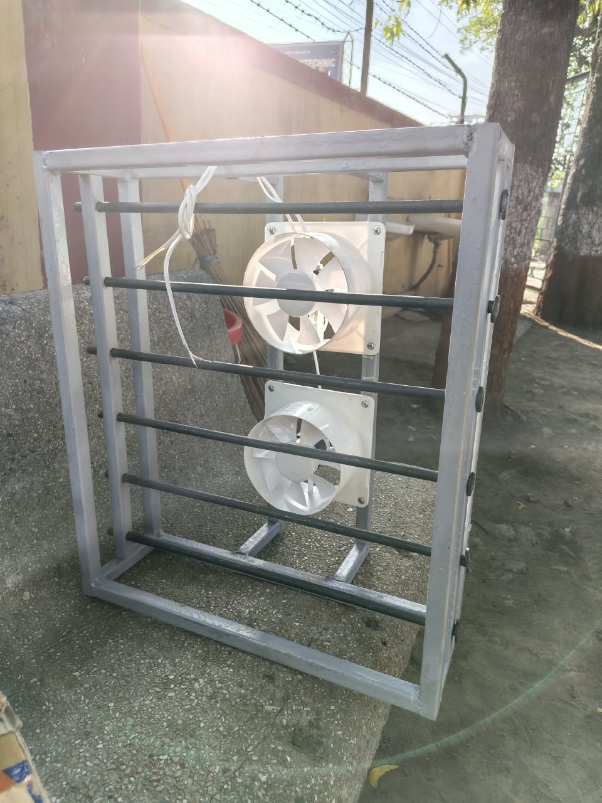
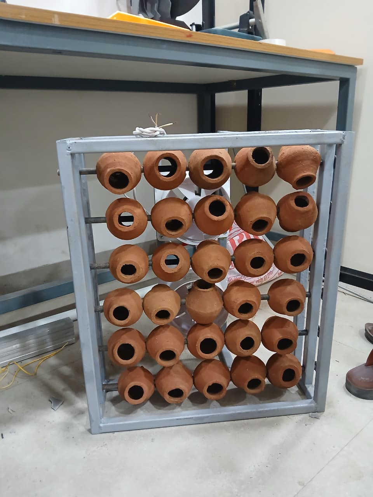
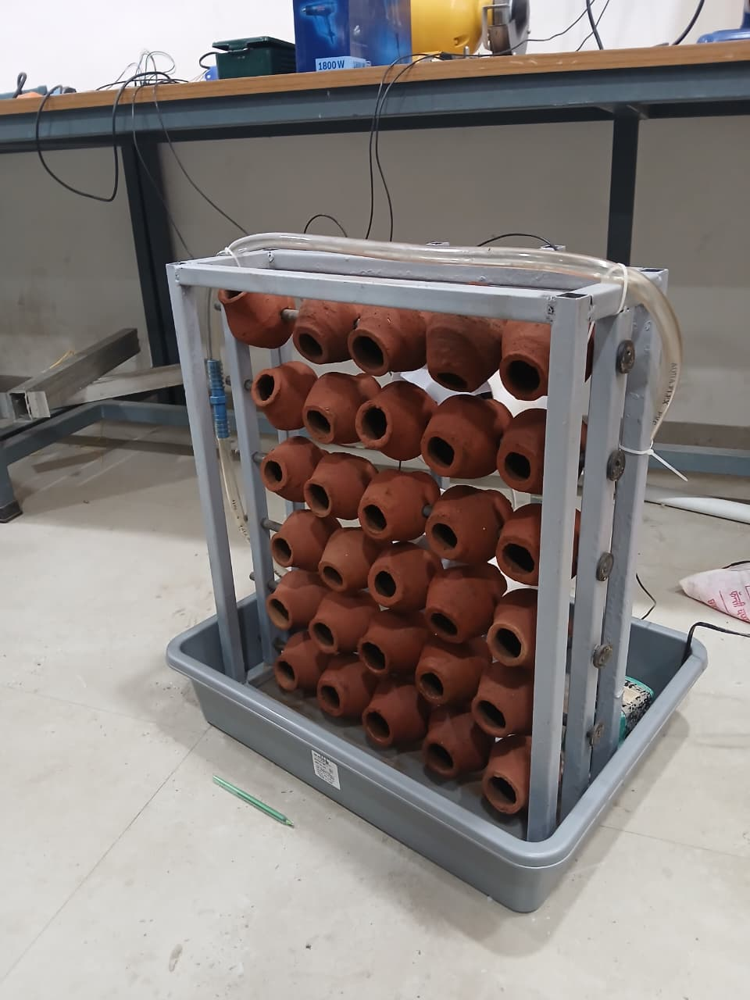
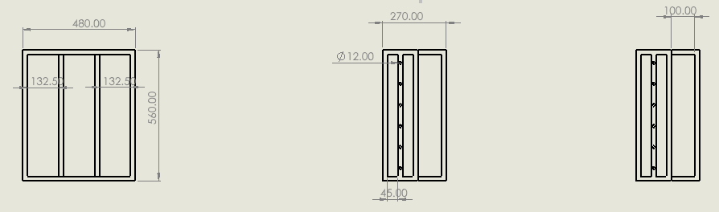
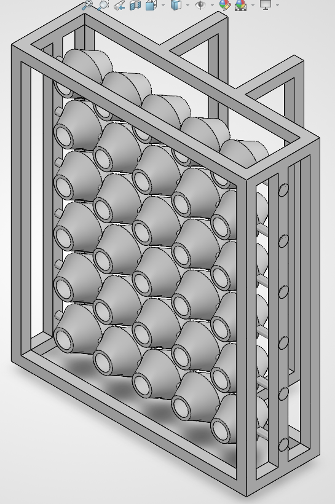

Makerspace · Group 17 · Tinkerers' Lab, Sanjivani University
ClayBreeze —
A Sustainable Clay-Based
Air-Cooling System
Tanmay Nilesh Pendbhaje LEADER · Harshal Kotame · Vedant Khairnar · Tanmay Mhaske
Project Guide: Dr. Kiran Wakchaure · FY B.Tech Mechanical Engineering
01Problem
Can a frame of hollow, unglazed clay pots, kept wet with recirculating water and ventilated by two fans, give a measurable drop in air temperature?
02Objective
Build a working prototype with automatic fan and pump control, then measure temperature, humidity, airflow and water use.
03Working principle CONCEPTUAL
- AIR
- room air → rear fans → through & around the pots → front
- WATER
- tub → pump → tubing → pots → back to the tub
04Build — fabrication to final assembly

1Pipe cutting 
2Welded frame 
3Paint, rods, fans 
430 clay pots 
5Final, with tub
05Key specs
| Frame | 480 × 560 × 150 mm |
|---|---|
| Section | 20 mm square pipe |
| Opening | 440 × 520 mm |
| Depth | 270 mm with fan mount |
| Rods | 6 × ⌀12 mm |
| Pots | 30 unglazed (5 × 6) |
| Fans | 2, rear-mounted |
| Water | Tub, pump, tubing |
06Control logic
| Output | ON | OFF |
|---|---|---|
| Fan 1 | > 26 °C | ≤ 25 °C |
| Fan 2 | > 30 °C | ≤ 29 °C |
| Pump (RH) | < 75 % | ≥ 77 % |
Between the limits each output keeps its previous state (hysteresis).
Electronics
- ESP32
- DHT11 · GPIO32
- Relay · GPIO25/26/27
- 2 fans
- Water motor
07CAD


Results: no measured results are claimed.
Inspired by reporting on Project Vaayu, a separate student initiative using clay kulhads to cool classrooms. Not our project; its results are not ours.
Scan: live site, 3D model, docs
tanmay-np.github.io/
Claybreeze-Sustainable-
Air-Cooling